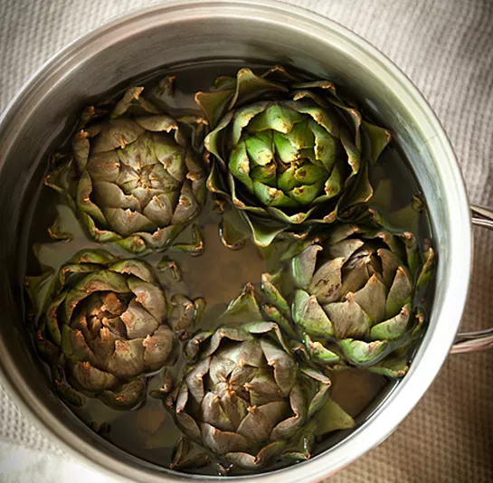
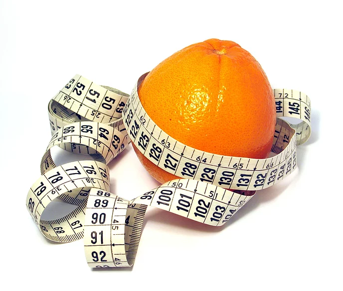
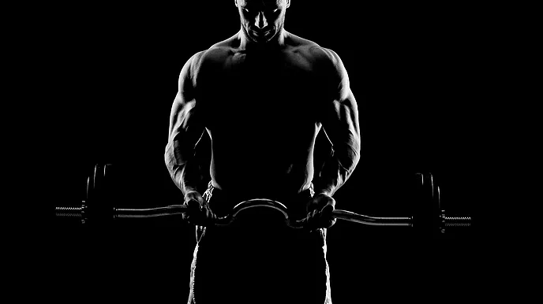

PERSONAL BLOG
Lets talkk health & fitness. . .
ELEVATED FITNESS BLOG
In this blog series we will discuss eerything fitness and health. From facts and tips to helpful information that will sky rocket you into a happier healthier lifestyle.
Artichoke Hearts
“August 23, 2018 | Arius Norris BA, NSCA-CPT”
Artichoke heats are a bitter tasting vegetable that are packed with health benefits. To me, it tastes similar to a green olive so I never eaten it by itself. The way I prefer to consume them is as a dip, either at a restaurant or my girlfriend throwing down in the kit...
Food of the month
“April 13, 2018 | Arius Norris BA, NSCA-CPT”
Today we will be examining the food of the month. This little guy is very inexpensive and very easily accessible to almost everyone. One of my favorite parts about this piece of fruit is that it is very convenient as far as time and storage, I mean it already comes wra...
How to keep your body in an Anabolic state
“April 13, 2018 | Arius Norris BA, NSCA-CPT”
Anyone who wishes to put on muscle mass or enhance their overall strength should keep their body in an anabolic state as often as possible. When examining the body there are basically two states that your body shifts from on a daily basis: anabolic and catabolic. Anabo...